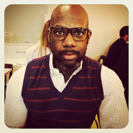
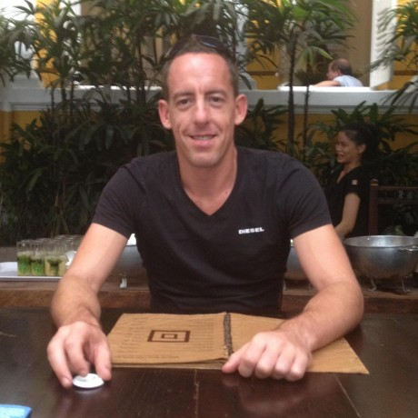

-
WDI March 2014
-
WDI March 2014
WDI Class March 2014
WDI is a twelve week immersive course run by General Assembly. During the course students cover a wide range of languages and technologies allowing them to build and deploy their own project.
As part of the course each student does two individual projects as well as a group project. In addition many mini projects are completed as homework.
Select a student to see their bio and a sample of the work they have accomplished over the length of the course.
Technologies
HTML5CSS3RubyRuby On RailsSinatraJavascriptJQueryBackboneGitHerokuSQLRubyGemsAmazon Web ServicesSublimeTrello -
Hana Kim
-
Noor BL
Noor
Noor combines disco and technology to create awesome. Prior to the course, Noor earned a Bachelor's degree in Business Administraion (University of Geneva) and an MA in Commercial Law (SOAS),interning for Sandbox (sandbox.is) in between degrees. By combining her business background and her programing experience acquired at GA, she aims to find opportunities in the tech industry to put her skills to profit and continue her learning journey in web development. -
Niraj Vyas
-
Scotty Gammon
Scotty Gammon
Scott was born in New Jersey and studied Media and Communications at New York University. Upon graduation he worked in television for some time before moving to digital during the "Silicon Alley" tech boom in 2010. Wearing a bunch of different hats for the last couple of years before coming to WDI, Scott looks to settle in as a full stack dev role in the burgeoning London startup scene. -
Jason Banks
Jason Banks
Jason formerly worked as a corporate attorney for a white-shoe law firm in its offices in New York, Paris and London. Wanting to solve more creative problems more creatively, he switched into web development. He is looking for a position in an organization where he can learn good industry practice while also having a non-negligible impact on projects. Separately, he is a fan of cycling, films that involve teamwork, making ice cream, Manhattan's that are on the sweeter side, and breakast. -
Instructors
Instructors
Michael Pavling
Michael has been working with web development technology since 1999, and for the last six years has specialized in Ruby and Rails. He has extensive experience teaching beginners and is also a qualified instructor in skiing and martial arts.Alex Pounds
With a background in Computer Science and more than seven years of commercial experience, Alex brings both theory and practice to the classroom. He's particularly fond of Ruby, Python, JavaScript and web standards.Imran Sulemanji
Imran excelled at WDI 4 and was taken on as an teaching assistant for WDI 5. Prior to GA, Imran has been amongst other things, a musician, photographer, butler but most recently and successfully a business owner running a picture framing workshop and managing an e-commerce site. -
Samuel Hill
Samuel Hill
After graduating in 2011 with a degree in International Politics, Samuel worked in the inventory team for a large technology manufacturer and retailer. He continued in this until joining General Assembly in March 2014 to take up a place on their Web Development Immersive. Having graduated from General Assembly, Samuel is now looking for his first junior developer role.Projects
-
Paul Vargas
Paul Vargas
Before joining General Assembly Paul worked in Investments and Advisory with technology companies and startups. He also gained significant experience in the healthcare sector, working for multinational corporations, governmental agencies and academic institutions. Paul holds a Bachelor's Degree in Food Science and Biotechnology from BOKU, Vienna, an MSc in Technology Entrepreneurship from UCL and is an alumni of LBS Entrepreneurial Summer School.
-
Louie Christie
-
Mike Harris
Mike Harris
Mike loves the way that programming and design makes his brain work. The delight he gets from solving problems in order to create interesting projects brought him to study at General Assembly. He has really enjoyed learning how to think as a programmer. To take his learning further, he built his final project using tools that weren't covered in the course (Node, MongoDB, Angular). He found it extemely rewarding translating concepts from the course into these new areas.
Mike has worked in a variety of different roles in Finance both in London and New York and has a degree in Maths.
As for the next stage, Mike is looking to be stretched, to learn from those around him and to feel that his contribution is making a difference. Hopefully he won't have to speak in the third person in the future. -
Ben Kennedy

WDI Class March 2014
WDI is a twelve week immersive course run by General Assembly. During the course students cover a wide range of languages and technologies allowing them to build and deploy their own project.
As part of the course each student does two individual projects as well as a group project. In addition many mini projects are completed as homework.
Select a student to see their bio and a sample of the work they have accomplished over the length of the course.
As part of the course each student does two individual projects as well as a group project. In addition many mini projects are completed as homework.
Select a student to see their bio and a sample of the work they have accomplished over the length of the course.
Technologies
HTML5CSS3RubyRuby On RailsSinatraJavascriptJQueryBackboneGitHerokuSQLRubyGemsAmazon Web ServicesSublimeTrello